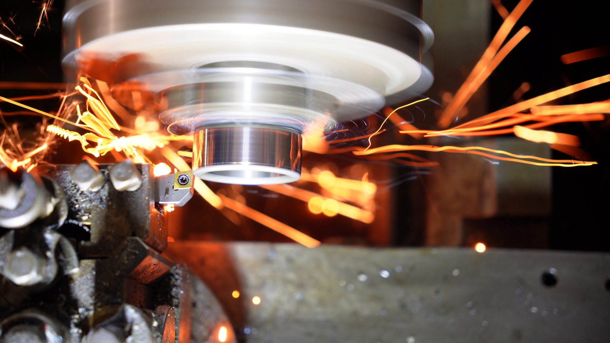
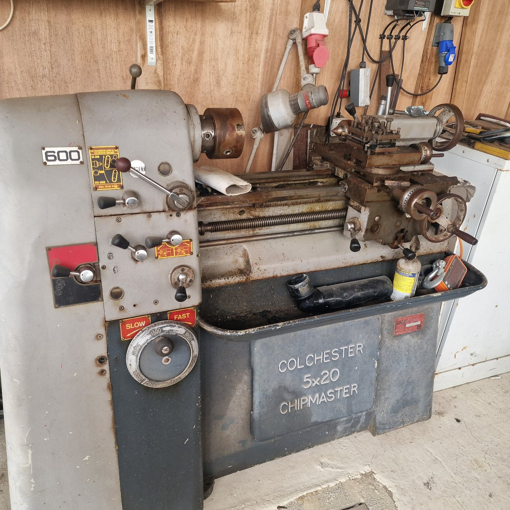
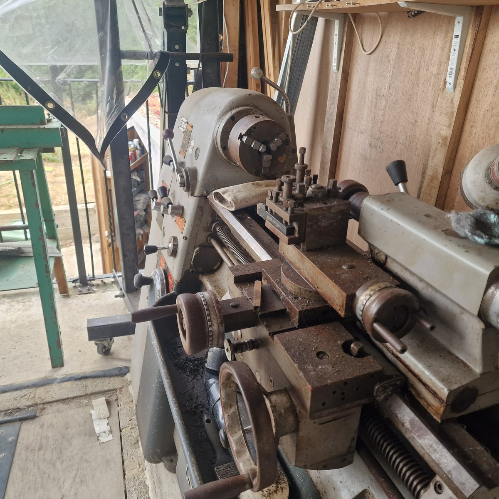
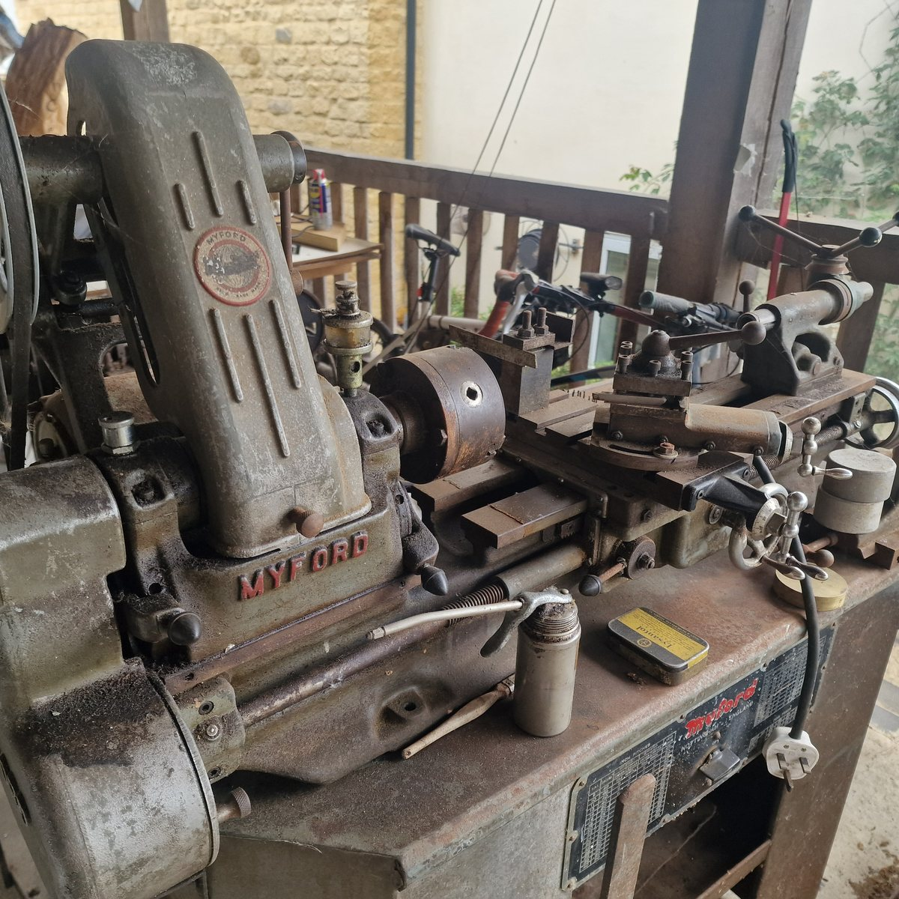
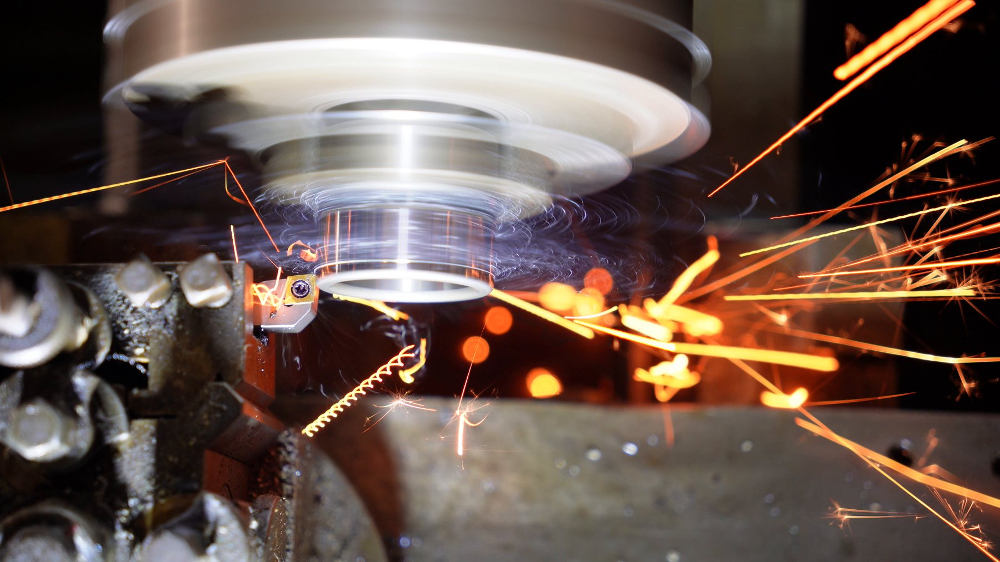
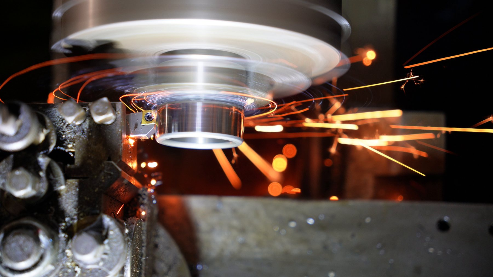
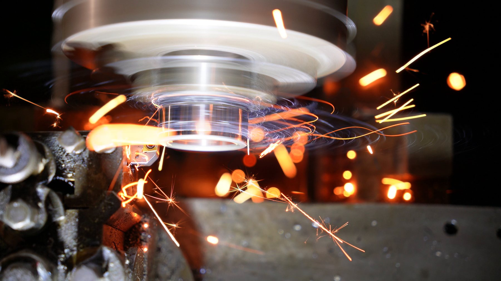

Longer cut
Machining / gratuitous sparks
Lathe Sparks
Machining hardened steel with a CBN insert on an old Colchester Chipmaster lathe. This is not pretending to be a complicated project page. This is mainly sparks. Beautiful, slightly alarming, deeply satisfying sparks.
And yes, I also have a Myford. Obviously. Who does not need two lathes?

Best clip
The spark ring.
This is the short one and probably the prettiest: the tool cuts, the spindle blurs, and the sparks make little orange orbits like the lathe has briefly become a small industrial planetarium.
More orange drama
The bigger shower
The setup
Old iron, modern insert.
The machine is a Colchester Chipmaster: proper old British workshop machinery, heavy in all the useful places. The cut is on hardened steel using a CBN insert, which is why the footage looks less like normal turning and more like metal fireworks.
The point
None, almost.
Sometimes the correct reason to document something is that it looks fantastic. It still says something real: tools, materials, patience, judgement, and the pleasure of understanding a machine well enough to make it do something slightly spectacular.





